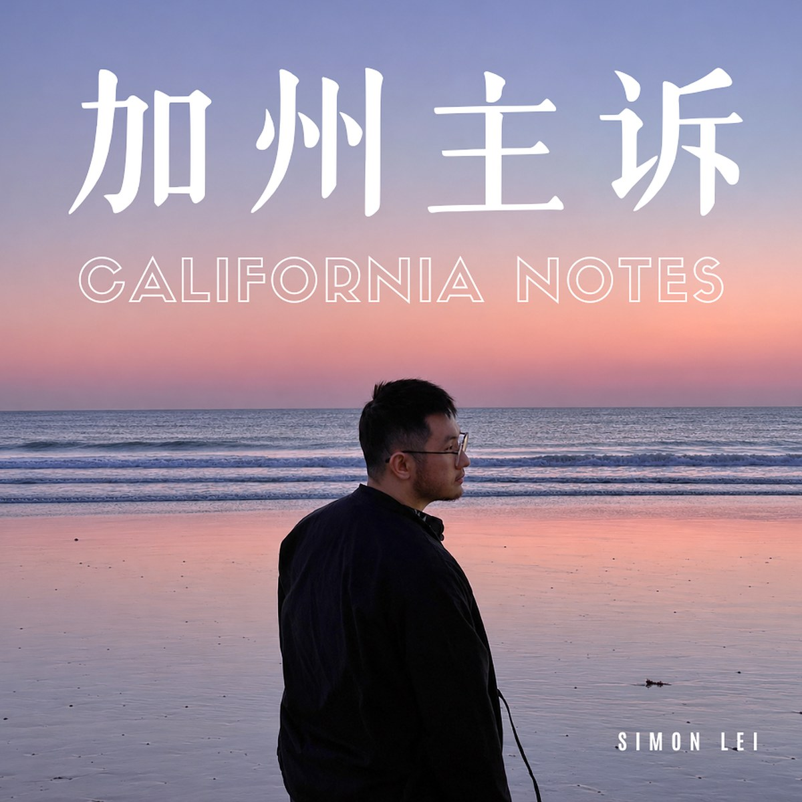

加州主诉
CALIFORNIA NOTES · 美国住院医播客
我们聊一个人怎么走上美国住院医这条路，也聊 TA 在路上的风景。记下彼此的成长，给未来的自己，也给后来的人留一点线索。
联系微信：RM_CHN
微信里打不开的话，点右上角「···」用浏览器打开

CALIFORNIA NOTES · 美国住院医播客
我们聊一个人怎么走上美国住院医这条路，也聊 TA 在路上的风景。记下彼此的成长，给未来的自己，也给后来的人留一点线索。
联系微信：RM_CHN